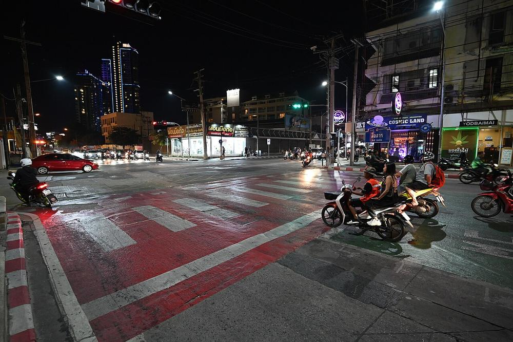
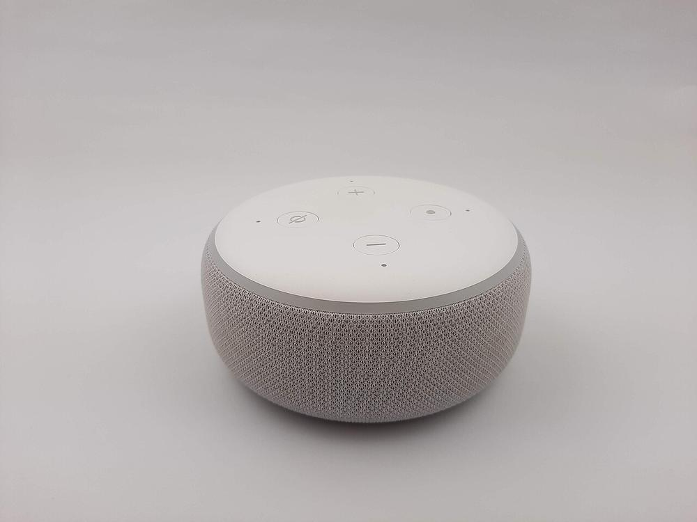
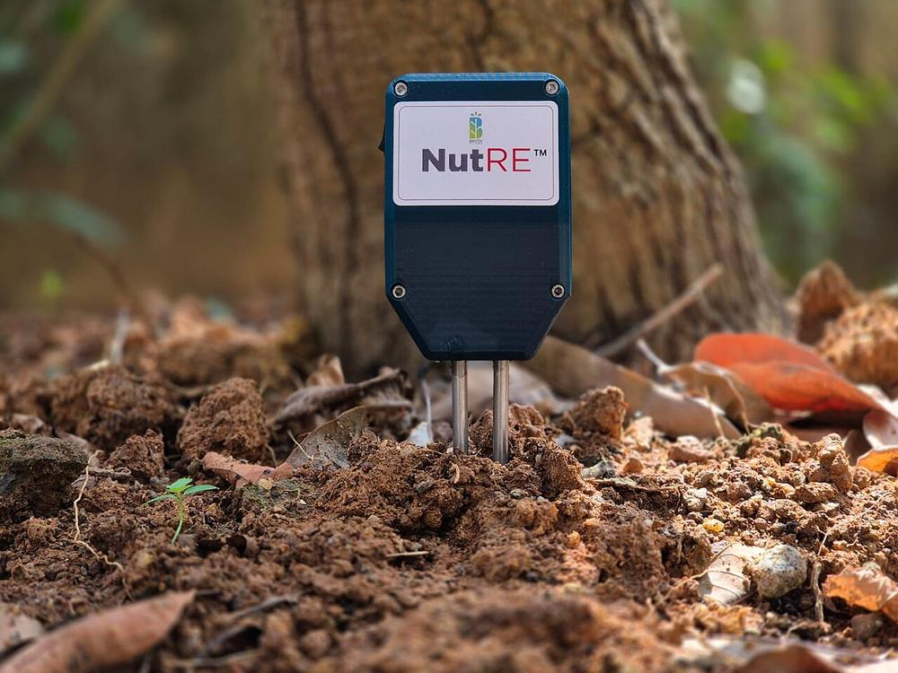

⚡ Energía
Los medidores inteligentes envían el consumo por intervalos cortos y permiten tarifas por hora; la red detecta cortes sin que nadie llame. Es el caso estrella del IIoT.
IOT EN LA CALLE, EN LA CASA Y EN EL CAMPO
No es ciencia ficción: cada caso resuelve un problema concreto con sensores, conectividad y datos. Se presentan con la misma estructura: problema, solución IoT y beneficio.

CASO 01 · CIUDADES INTELIGENTES
En las intersecciones tradicionales el tiempo de luz es fijo, aunque a las 3 a. m. no pase nadie y a las 7 p. m. haya cola de dos cuadras. Las ciudades inteligentes conectan esos semáforos a una red (a menudo LoRaWAN o fibra municipal) y dejan que un sistema ajuste los tiempos según lo que realmente ocurre.

CASO 02 · DOMÓTICA
La domótica lleva iluminación, climatización, cerraduras y cámaras a un solo panel: la app o la voz del asistente. Detrás, cada dispositivo habla por Wi-Fi, Zigbee o el estándar Matter, diseñado para que marcas distintas se entiendan entre sí.

CASO 03 · AGRICULTURA DE PRECISIÓN
Regar de madrugada “por si acaso” desperdicia agua y pudre raíces. En la agricultura de precisión, sensores de humedad de suelo, temperatura y lluvia miden el campo real; si el terreno todavía está húmedo, la válvula no se abre.
CASO 04 · SALUD Y WEARABLES
Los relojes y pulseras inteligentes registran frecuencia cardiaca, oxígeno, sueño y electrocardiograma; los parches continuos siguen la glucosa en sangre. El dato viaja al celular y, con consentimiento, al médico.
Y AUNQUE NO LO CREAS…
Los medidores inteligentes envían el consumo por intervalos cortos y permiten tarifas por hora; la red detecta cortes sin que nadie llame. Es el caso estrella del IIoT.
Contenedores con GPS y sensores de temperatura vigilan la cadena de frío del alimento perecedero; etiquetas RFID registran cada paso del envío sin abrir la caja.
Estaciones de bajo costo miden calidad del aire, ruido y nivel de agua en tiempo real; los datos abiertos permiten mapas de contaminación que la ciudadanía puede usar.
Hilo común de los cuatro casos: siempre está el ciclo completo —sensor que percibe, red que transmite, nube que analiza y actuador que responde—. Cambia el contexto, no la arquitectura.